Agenda...
- Criar conta GitHub
- Criar conta Cloud9
- Iniciar um Workspace PHP
- Compartilhar o Workspace
- Comandos Git Básicos
- Recomendações/Boas Práticas
Esta apresentação está disponível em: https://guipedreira.github.io/tutorial-tecwebii/
Criar conta GitHub
Criar conta GitHub
Acessar: http://www.github.com

Criar conta GitHub
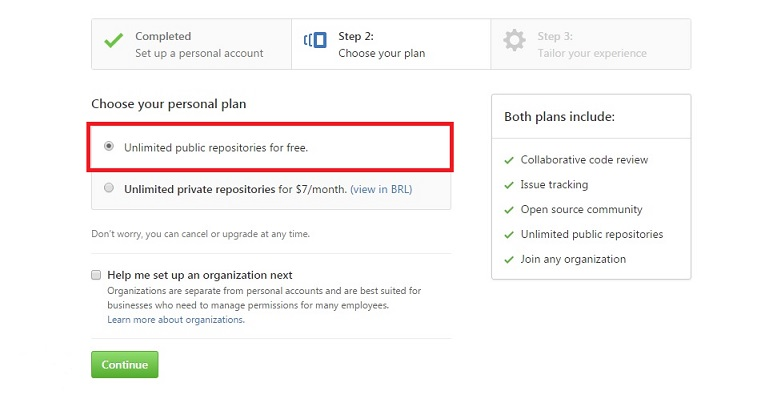Criar conta GitHub
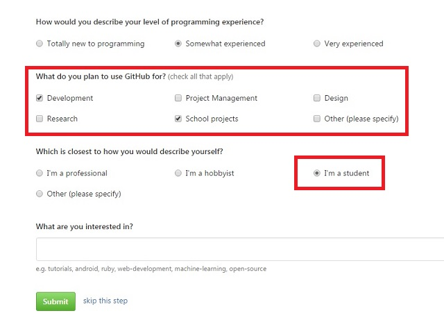Criar conta GitHub
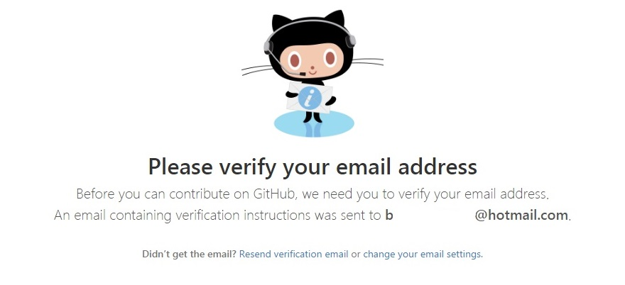Criar conta GitHub
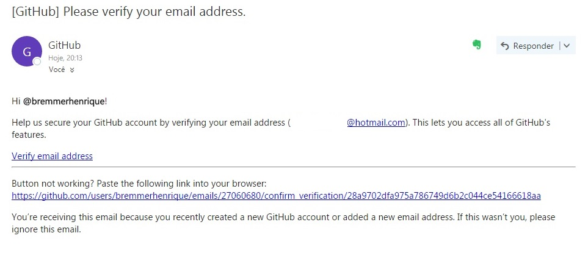Criar conta GitHub
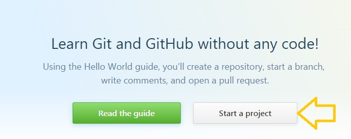Criar conta GitHub
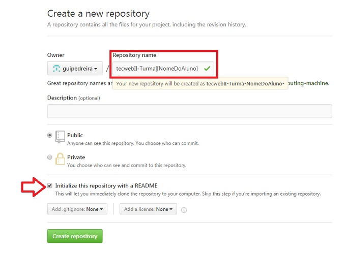Criar conta GitHub
Copie este link:
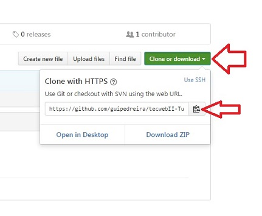Ele será útil.
Criar conta Cloud9
Criar conta Cloud9
Acessar: http://www.c9.io
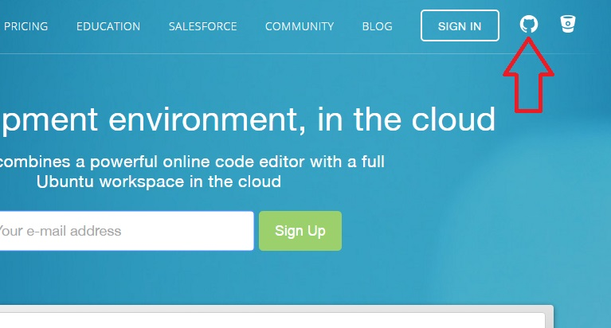Criar conta Cloud9
Utilize os dados da conta do Github
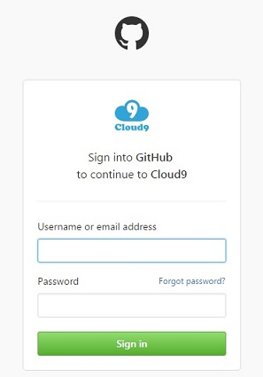Criar conta Cloud9
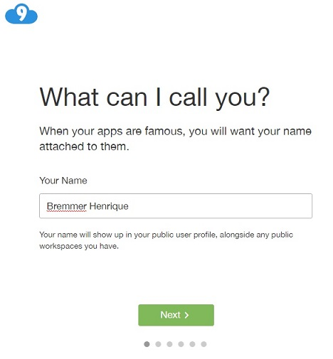Um nome de exibição para os outros usuarios
Criar conta Cloud9
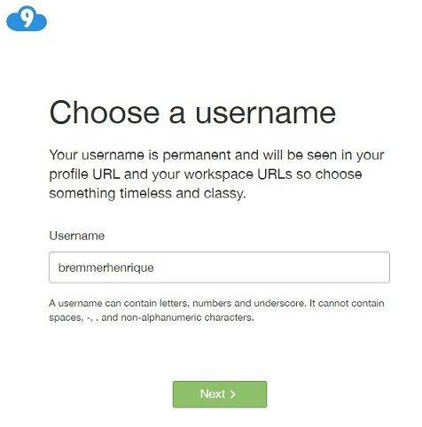Criar conta Cloud9
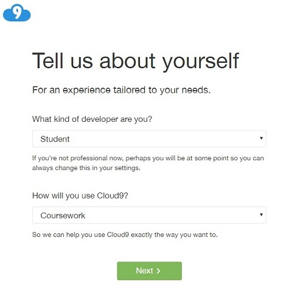Criar conta Cloud9
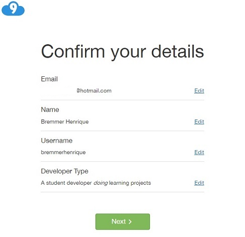Criar conta Cloud9
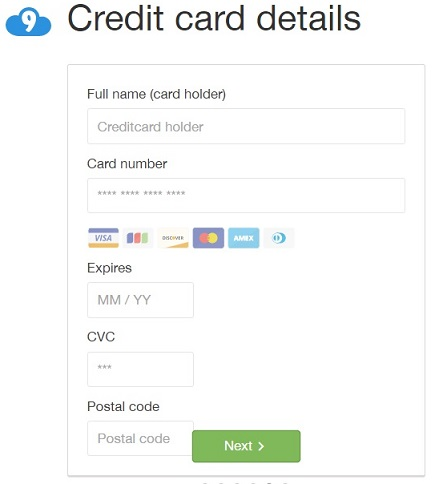Dados do cartão de crédito (nada será cobrado)
Criar conta Cloud9
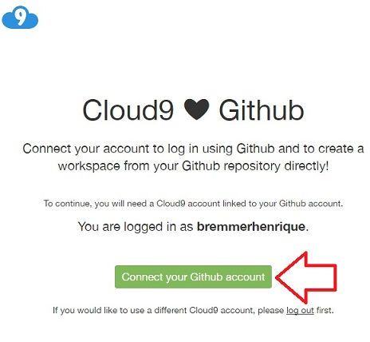E autorize o Cloud 9 acessar os dados do seu GitHub
Iniciando um Workspace PHP
Workspace PHP
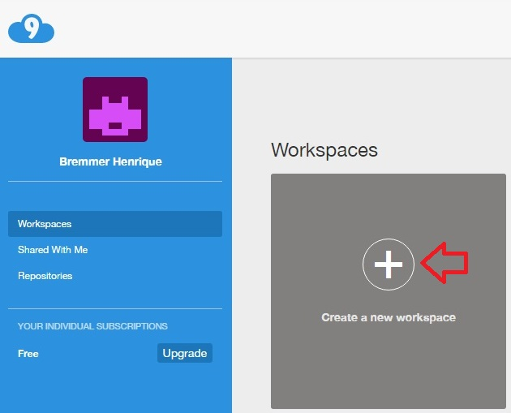Workspace PHP
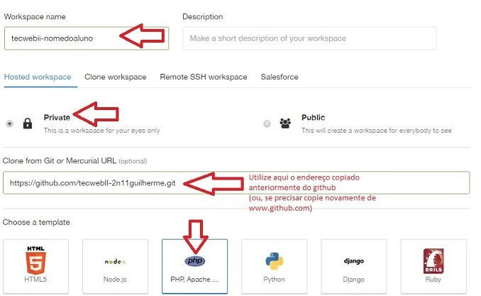Compartilhando Workspace
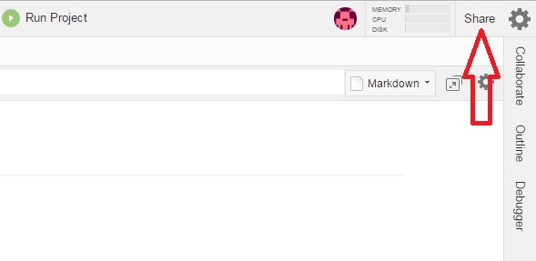Compartilhando Workspace
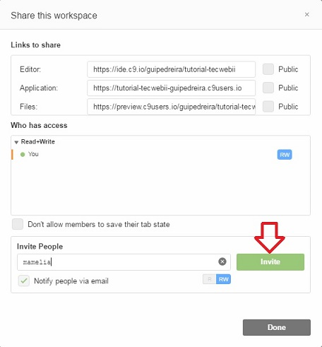Comandos Git Básicos
Comandos Git Básicos
seuusuario:~/workspace(master)$git status
On branch master
Your branch is up-to-date with 'origin/master'.
nothing to commit, working tree clean
Tudo OK!, seu repositório está na ultima versão
Comandos Git Básicos
Crie um arquivo PHP no workspace!
Comandos Git Básicos
seuusuario:~/workspace(master)$git status
On branch master
Your branch is up-to-date with 'origin/master'.
Untracked files:
(use "git add ..." to include in what will be committed)
index.php
nothing added to commit but untracked files present (use "git add" to track)
Incluimos um novo arquivo, mas ainda não adicionamos ele ao repositório (Untracked files).
Comandos Git Básicos
seuusuario:~/workspace (master) $ git add .
Assim incluimos todos os novos arquivos ao repositório.
seuusuario:~/workspace (master) $ git add index.php
Poderíamos incluir apenas o index.php ao repositório.
seuusuario:~/workspace (master) $ git add index.php (novoarquivo.txt)
ou poderíamos incluir alguns arquivos ao repositório.
Comandos Git Básicos
seuusuario:~/workspace(master)$ git status
On branch master
Your branch is ahead of 'origin/master' by 1 commit.
(use "git push" to publish your local commits)
Changes to be committed:
(use "git reset HEAD ..." to unstage)
modified: index.php
Agora o Git está controlando a versão do nosso arquivo index.php
Comandos Git Básicos
seuusuario:~/workspace(master)$ git commit -m "Commit Inicial"
Para criarmos uma "versão" do nosso código, e adicionarmos uma mensagem à ela.
Comandos Git Básicos
Para conferir se a integração com o GitHub está correta:
seuusuario:~/workspace(master)$ git remote -v
origin https://github.com/seuusuario/tecwebii.git (fetch)
origin https://github.com/seuusuario/tecwebii.git (push)
Comandos Git Básicos
seuusuario:~/workspace(master)$ git push
Username for 'https://github.com': seuusuario
Password for 'https://seuusuario@github.com': [suasenhaaqui] (não mostra *)
Counting objects: 121, done.
Delta compression using up to 8 threads.
Compressing objects: 100% (114/114), done.
Writing objects: 100% (121/121), 2.16 MiB | 674.00 KiB/s, done.
Total 121 (delta 15), reused 0 (delta 0)
remote: Resolving deltas: 100% (15/15), done.
To https://github.com/guipedreira/tutorial-tecwebii.git
5e207b3..56d12e6 master -> master
Com este comando, enviamos nosso código para o GitHub (que foi configurado como repositório remoto)
Comandos Git Básicos
Ao acessarmos o GitHub novamente:
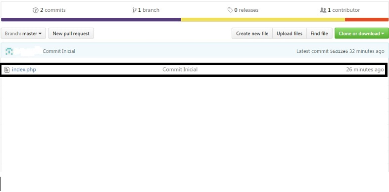Recomendações
Recomendações
- Utilize sempre o Cloud9 para editar seus códigos.
Caso não seja possível, cole o código alterado no Cloud9 quando estiver online. - Sempre que fizer uma alteração razoavelmente grande (terminar uma página nova, ou uma nova funcionalidade), faça um
git commit
Recomendações
- Sempre faça um
e em seguida umgit commit
assim, você mantem as versões corretas em ambos os lugares.git push
Colabore com GitHub
Esta apresentação está no GitHub, caso queira modificá-la ou copiá-la, basta acessar: https://github.com/guipedreira/tutorial-tecwebii